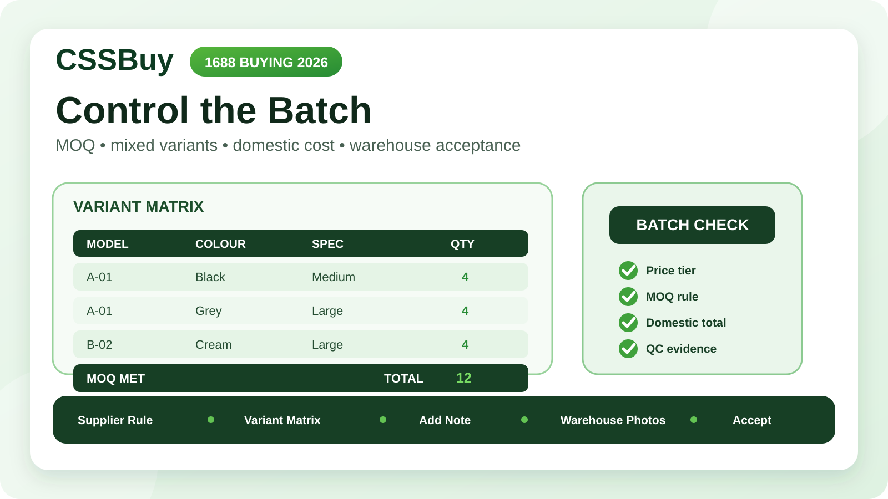

CSSBuy 1688 Buying Guide 2026: Control MOQ, Variants and Batch QC
A 1688 order can look inexpensive until the product page asks for several units, the colour mix changes the price, domestic freight appears at checkout, and a warehouse photo shows only the top item in a stack. The difficulty is not simply finding a low unit price. It is controlling a small wholesale transaction through a purchasing agent.
CSSBuy currently lists 1688 among the sources supported by its Buy For Me workflow. Its official instructions also warn that most 1688 products have a supplier minimum order quantity and that 1688 purchases use a different quality-control standard. Those two facts should change the way you prepare the order.
This guide treats an 1688 purchase as a batch with a specification, a quantity rule and an acceptance plan. That mindset is more useful than treating five units as five ordinary retail clicks.
Start with the supplier rule, not the headline price
The largest number on an 1688 page may be a unit price tied to a quantity band. It does not automatically describe what one unit costs or what your chosen mix will cost. Before copying the link into CSSBuy, record the exact quantity at which your displayed price applies.
Build a one-line price statement: “12 units total, price shown for the 10–49 tier, mixed colours subject to seller confirmation.” If the listing shows several quantity bands, preserve the band relevant to your planned order. A screenshot saved for your own records is useful because listings can change between research and purchase.
Do not force a small retail purchase into a wholesale listing. If the supplier requires six pieces and you need one, the correct conclusion may be that this supplier is not suitable. CSSBuy can place the order, but it cannot make the supplier’s MOQ disappear.
Define what counts toward MOQ
MOQ can apply to the entire listing, to one model, to one colour, or to a seller-defined assortment. Two listings that both say “minimum six” may therefore create very different orders.
Ask a precise question before payment: can the minimum be reached by combining the exact variants I want? For example, can three black medium shirts and three grey large shirts satisfy a six-piece minimum, or does each colour and size need six?
CSSBuy’s current purchase process allows colour, size and quantity selection, and its team contacts the seller to buy submitted items. Use the order fields for the final choices and use Add Note for an exception that the normal variant controls cannot express. The note should describe one confirmed mix, not ask the purchaser to invent one.
Create a batch matrix
A simple matrix prevents most variant errors. Give every intended combination its own row with four fields: model, colour, size or specification, and quantity. Add a fifth field for unit price only when variants have different prices.
A batch of ten caps might read: Model A / black / adjustable / four; Model A / navy / adjustable / three; Model B / cream / adjustable / three. The total at the bottom must equal the order quantity. If the CSSBuy order screen separates variants into multiple lines, the matrix should still reconcile to those lines.
Avoid notes such as “five black and five other colours.” “Other” is not a purchase specification. If a colour is optional, define an order of preference and a stop rule. For example: “Use olive only if the seller confirms forest green is unavailable; otherwise do not substitute.”
Reconcile three totals before paying
For an 1688 batch, verify the unit total, the merchandise total and the domestic total.
The unit total is the sum of all quantities in the matrix. The merchandise total is each variant quantity multiplied by its applicable unit price. The domestic total adds the seller’s delivery charge to CSSBuy’s China warehouse. CSSBuy’s official Buy For Me flow states that the product price and Chinese local delivery fee are paid at the purchase stage; international shipping is handled later.
If the seller gives one combined domestic figure, keep that figure in your record and show how it maps to the order. If freight is not yet known, mark it as unconfirmed. Zero and unknown are different facts. Entering zero because the seller has not answered creates a false budget.
Use Add Note as a change-control channel
CSSBuy says buyers can use Add Note during purchasing and that its team may contact the buyer when information is incomplete. For a batch order, use that channel to resolve a specific mismatch: an unavailable colour, a changed price tier, a supplier freight adjustment or an MOQ conflict.
When you receive a question, answer with a replacement instruction that can stand on its own. “Yes, that is fine” is weak if several issues were discussed. A stronger reply is: “Approve 12 units at the revised unit price; keep the original colour and size matrix; do not accept substitutes.”
Do not scatter the final decision across several messages. State the complete revised rule once, then keep a copy in your batch record.
Decide your acceptance standard before arrival
CSSBuy’s current instructions say warehouse staff inspect arriving items and provide photos, but they also state that products purchased from 1688 follow a different QC standard. Do not assume a wholesale batch will be examined like a single retail item in every detail.
Before ordering, decide which facts must be verified for the whole batch and which can reasonably be sampled. Whole-batch facts include received quantity, visible variant groups and whether the order appears to match the promised assortment. Sample facts may include stitching, finish, print alignment or the contents of individual sealed units, depending on the product and what the warehouse can see.
Your acceptance standard should be observable. “Good quality” is subjective. “Correct model code, six black and six grey units, correct size labels, no obvious colour mismatch, no crushed retail boxes” is actionable.
Design the photo request around uncertainty
Warehouse images have the highest value when they answer questions that matter to the batch decision. Start with a complete-group view that helps confirm quantity and variant grouping. Then request close views of identifiers that separate one version from another: model label, size tag, colour code, connector type, material marking or package label.
If the products are visually identical but carry different specifications, a wide photo alone is weak evidence. If the risk is colour consistency, one close-up may also be insufficient. Match the requested evidence to the failure mode.
Keep the photo plan proportionate. Opening or arranging every unit may be impractical or may change packaging. Prioritise the attributes whose failure would make the entire batch unusable.
Separate supplier defects from purchasing mistakes
When the batch arrives, compare it against two documents: the supplier’s confirmed offer and your final CSSBuy instruction. This helps identify where a mismatch began.
If you ordered the wrong mix, the warehouse did not create that mistake. If the final instruction was correct but the seller shipped a different mix, your saved matrix and confirmation provide a clean basis for asking CSSBuy to contact the seller. If the photo cannot establish the answer, request the missing evidence before making a return decision.
A structured record turns “this looks wrong” into a specific claim: “The confirmed matrix requires four black medium units, but the warehouse group shows two black medium and two black large.” Specific claims are faster to evaluate.
Do not confuse batch value with shipping efficiency
A low unit price does not guarantee a low delivered unit cost. Twelve inexpensive items may occupy a large parcel, require protective packaging or limit available delivery methods. CSSBuy’s current workflow warns that some products may be restricted to certain delivery methods and calculates international shipping later from the selected route, destination and estimated weight, with final cost based on verified package size and weight.
Before committing to MOQ, estimate the batch’s packed shape as well as its weight. Soft goods may compress; rigid boxes may dominate volume. Fragile units may need protection that removes the apparent advantage of dense consolidation.
Also ask whether every unit needs its retail box. Packaging removal can reduce volume, but it can lower resale usefulness or protection. Make that decision from the purpose of the purchase, not from a reflex to make the parcel smaller.
Choose one batch, split batches or walk away
There are three sensible outcomes after research.
Use one batch when the supplier accepts your exact mix, the price tier is clear, domestic freight is known, and the warehouse evidence can verify the important attributes. Split the order when two product groups have different risk, packaging or international-route needs. Walk away when MOQ forces unwanted inventory, variant rules remain ambiguous, or the delivered-cost estimate destroys the price advantage.
Walking away is a purchasing skill. A wholesale listing is not a bargain if half the minimum has no use.
A practical pre-payment worksheet
Before CSSBuy purchases, your worksheet should answer ten questions. What exact listing and supplier are involved? What quantity tier sets the price? What is the MOQ rule? Can variants be mixed? What is the final matrix? Does the matrix total match the order total? What is the merchandise total? What is Chinese domestic freight? What substitutions are allowed? What evidence will you need at the warehouse?
Then add two stop conditions: the maximum revised price you will accept without reconsidering, and the one specification that must not change. These stop conditions prevent a small seller adjustment from turning into an unplanned order.
The 1688 batch-control rule
A controlled 1688 purchase has one source record, one price tier, one MOQ interpretation, one variant matrix, one domestic-cost total and one warehouse acceptance plan. If any of those remains unclear, the order is still in research.
CSSBuy provides the operational bridge: product submission, seller contact, purchase, notes, warehouse inspection, storage and later international delivery. The buyer provides the commercial logic that connects those steps.
The best 1688 order is not automatically the batch with the lowest displayed unit price. It is the batch whose quantity rule you understand, whose variants you can reconcile, whose arrival you can verify and whose delivered cost still makes sense. Control those four points, and wholesale-style reverse purchasing becomes a planned transaction rather than a box of surprises.